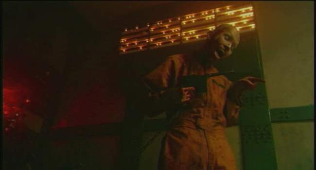
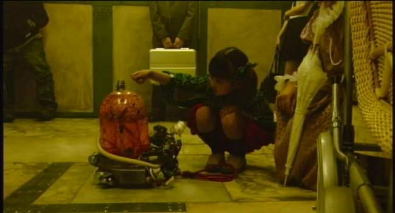
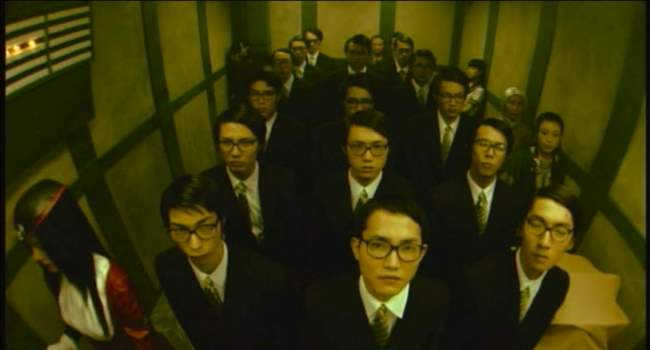
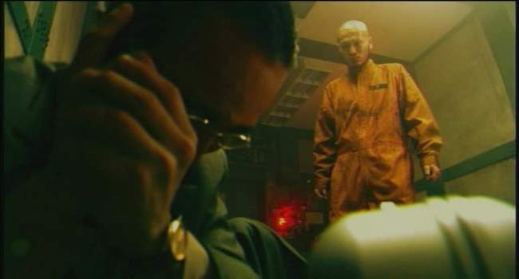
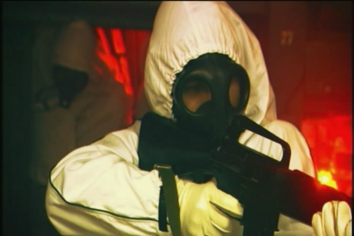
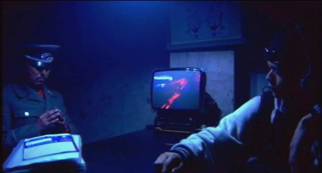
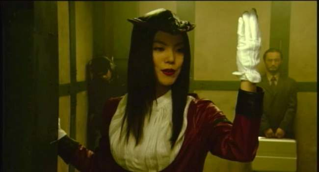
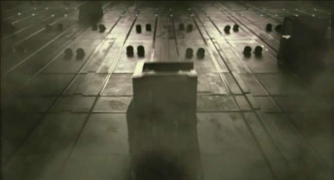
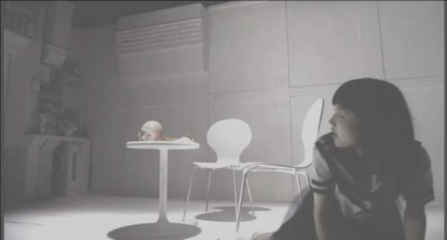
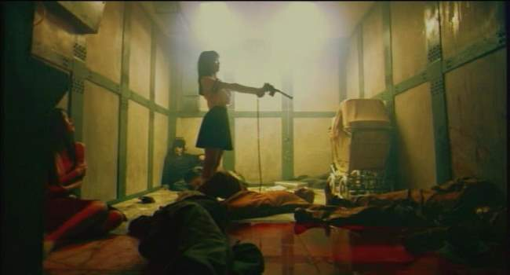

Movie review by : SFAM
Year : 2004
Directed by : Hiroki Yamaguchi
Written by : Hiroki Yamaguchi
Degree of Cyberpunk visuals : High
Correlation to Cyberpunk themes : High
Rating : 7/10
Key cast members :

Overview: One thing I love about Indie movies is the opportunity for complete originality. Indie director Hiroki Yamaguchi delivers a strange, but very well made micro-budget movie that is truly unique. From viewing the extras, virtually every part of the set was designed by searching through junkyards for throw-offs. Similar to the Cube, Hellevator: The Bottled Fools largely takes place on a single set. Similar to Brazil, the world of Hellevator is a bizarrely dystopic surveillance society where things just don't seem to work right. Nobody got paid who worked on this, but you wouldn't know it from the quality. Hellevator definitely has its own feel.

The Setting: Hellevator takes place in a non-specific dystopic near future, where a colony of people have long ago decided to move underground. While some aspects of life clearly involve advanced technologies, there is a strong analog, mechanistic component to society. Now, all life takes place in a very large megalopolis comprised of a set of very large levels and tunnels. Life is fully governed by an omnipresent security force, who have cameras in all key locations. Over 130 levels in all, each has a specific purpose. Some have hospitals or schools, others are power centers, and Level 99 is the prison ward. Because everything is underground, issues related to air quality are at a premium. Smoking is illegal, and merits a death sentence. To get from each level, people use these very large, mechanical elevators.
The Story: The beginning of Hellevator starts off with a television report of a set of explosions on Level 138, which ends up killing over 100 people. The police have pegged a few suspects of causing this crime, both of which ended up stuck on an elevator which malfunctioned during the explosion. Flashback to Luchino (played by Luchino Fujisaki) who is a troubled teen-age girl living on Level 138 who is on her way to school, which is on Level 4. She has a penchant for rebelling against the system and starts her day by illegally purchasing cigarettes from a drug dealer. Unfortunately, she almost gets caught, and ends up leaving her still burning cigarette butt at the power center near a set of flammable fluid containers.

Luchino gets on the elevator to take her to level 4, which is where the rest of the story takes place. On each floor, new people get on while others leave. Eventually when the elevator gets past 110, the elevator operator announces that they have entered the "express mode" ? no more stops should occur for a long time. At this point, the elevator is holding the white-gloved elevator operator (Ninalada Mochiduki), a business man (Viblio Sawatsukumori), a woman with a baby carriage (Alamocia Nakaji), a quite guy with headphones (Nocosh Utsunomiya) and Luchino. Unfortunately, the elevator is force-stopped at level 99, the prison level. Two prisoners, one a bomber (Calpico Teranouchi), and the other a serial rapist (played wonderfully by Zitacock Obitani) get on with a very unstable young prison guard. Shortly afterwards, the explosion on Level 138 occurs. This causes the elevator to malfunction, and the small group is now stranded.

The malfunctioned elevator becomes a powder keg for runaway paranoia. The prison guard starts to lose it, and through a strange sequence of events, causes the prisoners to become free. The rapist quickly beats the guard to a pulp, which ends with a sequence where he takes a bite out of the guard's neck. From there the prisoners sadistically start to impose their will on the beleaguered elevator participants. The rapist starts to do his thing on the elevator operator and eventually starts kicking Luchino. Luchino starts to have flashbacks of times when her father abused her similarly - Luchino eventually snaps. She picks up the gun and starts to repeatedly shoot the bomber prisoner.

From there, the story devolves into a repetitive set of sequential events which cause various people on the elevator to lose control. Some result in murders while others result in interesting character expositions. Throughout, the mood is high tension paranoia. Eventually, the THX-1138-like guards break the remaining few left alive. The story then connects back to the police detective, who is in the process of interviewing those that survived the elevator trip. The ending, not discussed here, provides a different take on the world which this future takes place.

The Acting: The acting in Hellevator is far better than one would expect in a movie where nobody was getting paid. Luchino Fujisaki turns in a solid performance as a person devolving back into psychosis. Zitacock Obitani is terrific as an extremely bizarre serial rapist, and almost makes the movie a must-watch all by himself. The rest of the cast works. The only stand-out lousy performance is turned in by the blond haired prisoner guard, but he doesn't last long enough to matter.
The Cinematography: Hellevator, uses two omnipresent color schemes: within the elevator, everything is dingy yellows and greens. For the police interrogation scenes, everything is dark blue. Yamaguchi makes liberal use of perspective shots, sometimes involving fish-eye lenses, and frequently looking down or up at the participants. In short, Yamaguchi makes the most of a very limited budget and set. He even throws in a Matrix slo-mo shot that was apparently filmed with a single camera.

System Service Staff as Robots: In Hellevator, the elevator lady acts completely robotic until the convicts break things. Her overt disposition is of a person who never gets rattled, never intimates a personal connection, and never changes her demeanor regardless of the surroundings. In a sense, she is the perfect employee for the underground megalopolis. Similar to movies like Brazil or 1984, the elevator lady represents the humans as machines metaphor. In this view, we are nothing more than a single redundant part ? a cog in a massive machine. For the ideal system employee, individualism has been quashed in favor of ritualized, repeatable routines.

Telepathy: Hellevator does a good job of integrating telepaths into its strange world. The majority of the people are normal, and do not recognize the telepaths. In Hellevator, the Telepaths are able to notice when another uses their sensory perception. What makes Yamaguchi's view of telepath's somewhat interesting is he also touches on their ability to see others' memories. This leads to some interesting flashbacks of others' experiences on the elevator. More interesting though is the fact that Luchino's personal psychosis colors her views of the others' memories. This turns reading thoughts into something far less precise, and in the end makes it more believable.

Repression Exposed by Extreme Psychological Pressure: Hellevator explores extreme psychological pressures on a group of already unstable people. Everyone stuck on the elevator is hiding something significant about themselves. The businessman is potentially a bioterrorist; the woman with the crib is hiding groceries instead of a baby, and the quiet guy in the corner is masquerading as a cop. Luchino had been abused by her father to the point that she eventually flipped and killed him. She has since repressed her issues but when placed in a similar circumstance, Luchino responds similarly and goes on to murder one of the convicts. Her perception of reality starts to bear little resemblance to the rest. The robotic elevator woman turns into an emotional basket case. Although this is a fully reasonable reaction to an attempted rape, the contrast shown is with her earlier robotic persona. In fact, everyone, when thrown into this circumstance acts in wholly strange ways.

The Bottom Line: If you like Extreme Japanese Cyberpunk movies, Hellevator: The Bottled Fools is well worth a watch. There's quite a bit of blood and gore, but not when compared to some of the more extreme straight Japanese horrors. The plot is pretty straightforward once the movie gets moving ? I would have wished for a bit more interplay between the plot points. Also, there are a number of plot points which were touched on as significant, but were never completed. But overall, the movie is original and interesting. Little throwaways like the child's pet brain only add to the fun. Yamaguchi and crew really make the most of their set and the overall shoot. This one will stay with you for a few days.